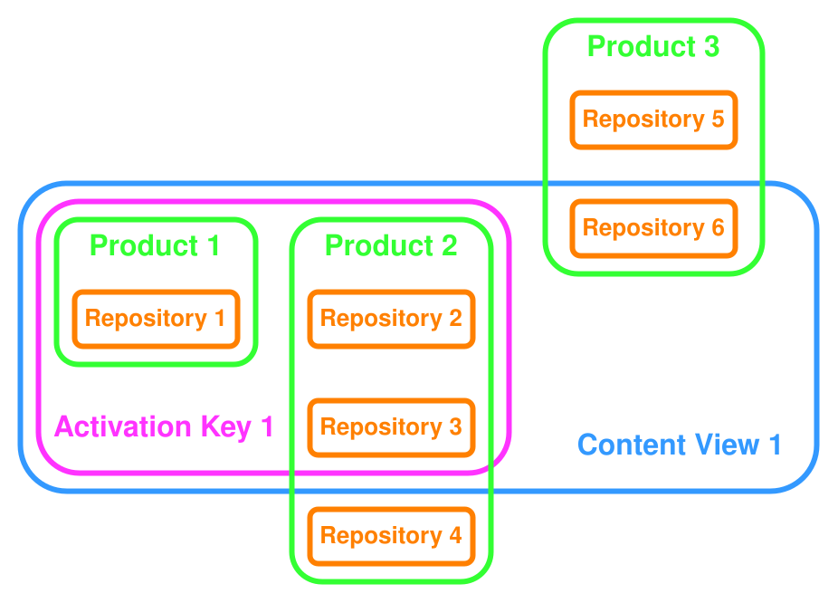

1. Glossary of terms used in Satellite
This alphabetically ordered glossary provides an overview of Satellite related technical terms.
- Activation key
-
Activation keys are used by Subscription Manager to register hosts to Satellite. They define content view and lifecycle environment associations, content overrides, system purpose attributes, and other parameters to be associated with a newly created host.
They are associated to exactly one lifecycle environment and exactly one content view, though this may be a composite content view. You can use them on multiple machines and they behave like configuration information rather than traditional software license keys. You can also use multiple activation keys with a single host. When you register a host using an activation key, certain content from Satellite is provided to the host. The content that is made available depends on the content in the activation key’s content view and lifecycle environment, any content overrides present, any repository-level restrictions such as operating system or architecture, and system purpose attributes such as release version.

- Ansible
-
Ansible is an agentless open-source automation engine. Ansible uses SSH to connect to hosts. It uses playbooks and roles to describe and bundle tasks. Within Satellite, you can use Ansible to configure hosts and perform remote execution.
For more information about using Ansible to configure hosts, see Managing configurations by using Ansible integration. For more information about automating Satellite using Ansible, see Using the Satellite Ansible Collection.
- Answer file
-
A configuration file that defines settings for an installation scenario. Answer files are defined in the YAML format and stored in the
/etc/foreman-installer/scenarios.d/directory. To see the default values for installation scenario parameters, use theDO_NOT_USE_foreman-installer_IN_CONTAINERIZED_BUILDS --full-helpcommand on your Satellite Server.
- ARF report
-
Asset Reporting Format (ARF) reports are the result of OpenSCAP compliance scans on hosts which have a policy assigned. Summarizes the security compliance of hosts managed by Red Hat Satellite. They list compliance criteria and whether the scanned host has passed or failed.
- Audits
-
Provide a report on changes made by a specific user. Audits can be viewed in the Satellite web UI under Monitor > Audits.
- Baseboard management controller (BMC)
-
Enables remote power management of bare-metal hosts. In Satellite, you can create a BMC interface to manage selected hosts.
- Boot disk
-
An ISO image used for PXE-less provisioning. This ISO enables the host to connect to Satellite Server, boot the installation media, and install the operating system. There are several kinds of boot disks: host image, full host image, generic image, and subnet image.
- Capsule Server
-
Capsule Servers can provide DHCP, DNS, and TFTP services and act as an Ansible control node or OpenVox server in separate networks. They interact with Satellite Server in a client-server model. Satellite Server always comes bundled with an integrated Capsule.
Capsule Servers are required in Satellite deployments that manage IT infrastructure spanning across multiple networks and useful for Satellite deployments across various geographical locations.
- Catalog
-
A document that describes the desired system state for one specific host managed by Puppet. It lists all of the resources that need to be managed, as well as any dependencies between those resources. Catalogs are compiled by a OpenVox server from Puppet Manifests and data from OpenVox agents.
- Candlepin
-
A service within Katello responsible for subscription management.
- Compliance policy
-
Compliance policies refer to the application of SCAP content to hosts by using Satellite with its OpenSCAP plugin. You can create compliance policies by using the Satellite web UI, Hammer CLI, or API. A compliance policy requires the setting of a specific XCCDF profile from a SCAP content, optionally using a tailoring file. You can set up scheduled tasks on Satellite that check your hosts for compliance against SCAP content. When a compliance policy scan completes, the host sends an ARF report to Satellite.
- Compute profile
-
Specifies default attributes for new virtual machines on a compute resource.
- Compute resource
-
A compute resource is an external virtualization or cloud infrastructure that you can attach to Satellite. Satellite can provision, configure, and manage hosts within attached compute resources. Examples of compute resources include VMware or libvirt and cloud providers such as Microsoft Azure or Amazon EC2.
- Configuration Management
-
Configuration management describes the task of configuring and maintaining hosts. In Satellite, you can use Ansible and Puppet to configure and maintain hosts with Satellite as a single source of infrastructure truth.
- Container (Docker container)
-
An isolated application sandbox that contains all runtime dependencies required by an application. Satellite supports container provisioning on a dedicated compute resource.
- Container image
-
A static snapshot of the container’s configuration. Satellite supports various methods of importing container images as well as distributing images to hosts through content views.
- Content
-
A general term for everything Satellite distributes to hosts. Content includes software packages such as
.rpmpackages, errata, or Docker images. Content is synchronized into the Library and then promoted into lifecycle environments using content views so that they can be consumed by hosts.
- Content delivery network (CDN)
-
The mechanism used to deliver Red Hat content to Satellite Server.
- Content view
-
Content views are named and versioned collections of repositories. When you publish a content view, Satellite creates a new content view version. This content view version is a frozen snapshot of the current state of the repositories within the content view. Any subsequent changes to the underlying repositories will no longer affect the published content view version. Once a content view is published, it can be promoted through the lifecycle environment path, or modified using incremental upgrades.
- Composite content view
-
Composite content views contain content views, which allows for a more modular approach to manage and version content. You can choose which version of each content view is used in a composite content view.
- Discovered host
-
A bare-metal host detected on the provisioning network by the Discovery plugin.
- Discovery image
-
Refers to the minimal operating system based on Red Hat Enterprise Linux that is PXE-booted on hosts to acquire initial hardware information and to communicate with Satellite Server before starting the provisioning process.
- Discovery plugin
-
Enables automatic bare-metal discovery of unknown hosts on the provisioning network. The plugin consists of three components: services running on Satellite Server and Capsule Server, and the Discovery image running on host.
- Discovery rule
-
A set of predefined provisioning rules which assigns a host group to discovered hosts and triggers provisioning automatically.
- Docker tag
-
A mark used to differentiate container images, typically by the version of the application stored in the image. In the Satellite web UI, you can filter images by tag under Content > Docker Tags.
- ERB
-
Embedded Ruby (ERB) is a template syntax used in provisioning and job templates.
- Errata
-
Updated packages containing security fixes, bug fixes, and enhancements. In relationship to a host, erratum is applicable if it updates a package installed on the host and installable if it is present in the host’s content view (which means it is accessible for installation on the host).
- External node classifier (ENC)
-
A construct that provides additional data for a server to use when configuring hosts. When Puppet obtains information about nodes from an external source instead of its own database, the external source is called External node classifier. If the Puppet plugin is installed, Red Hat Satellite can act as an External node classifier to OpenVox servers in a Satellite deployment.
- Facter
-
A program that provides information (facts) about the system on which it is run; for example, Facter can report total memory, operating system version, architecture, and more. Puppet modules enable specific configurations based on host data gathered by Facter.
- Facts
-
Host parameters such as total memory, operating system version, or architecture. Facts are reported by Facter and used by Puppet.
- Foreman
-
Foreman is an open-source component to provision and manage hosts. Foreman is the core upstream component of Red Hat Satellite.
- Full host image
-
A boot disk used for PXE-less provisioning of a specific host. The full host image contains an embedded Linux kernel and init RAM disk of the associated operating system installer.
- Generic image
-
A boot disk for PXE-less provisioning that is not tied to a specific host. The generic image sends the MAC address of your host to Satellite Server, which matches it against the host entry.
- Hammer
-
Hammer is a command-line interface tool for Satellite. You can execute Hammer commands from the command line or utilize it in scripts. You can use Hammer to automate certain recurring tasks as an alternative to Satellite Ansible collection or Satellite API.
- Host
-
A host is a physical, virtual, or cloud instance registered to Satellite.
- Host collection
-
A user defined group of one or more Hosts used for bulk actions such as errata installation.
- Host group
-
A host group is a template to build hosts that holds shared parameters, such as subnet or lifecycle environment. It helps to unify configuration management in Ansible and Puppet by grouping hosts. You can nest host groups to create a hierarchical structure. For more information, see Working with host groups.
- Host image
-
A boot disk used for PXE-less provisioning of a specific host. The host image only contains the boot files necessary to access the installation media on Satellite Server.
- Incremental upgrade (of a content view)
-
The act of creating a new (minor) content view version in a lifecycle environment. Incremental upgrades provide a way to make in-place modification of an already published content view. Useful for rapid updates, for example when applying security errata.
- Installation Media
-
Installation media are sets of installation files used to install the base operating system during the provisioning process. An installation medium in Satellite represents the installation files for one or more operating systems, which must be accessible over the network, either through an URL or an NFS server location. It is usually either a mirror or a CD or DVD image.
Every operating system depends on exactly one path of an installation medium, whereas installation media paths may serve different operating systems at the same time. You can use operating system parameters such as
$version,$major, and$minorto parameterize the URL.
- Job
-
A command executed remotely on a host from Satellite Server. Every job is defined in a job template.
- Katello
-
Katello is an open-source plugin to perform content management and subscription handling. It depends on Pulp for content management, which fetches software from repositories and stores various versions of it. It also depends on Candlepin for host registration and managing subscription manifests. The Katello plugin is always installed on Satellite.
- Lazy sync
-
The ability to change the default download policy of a repository from Immediate to On Demand. The On Demand setting saves storage space and synchronization time by only downloading the packages when requested by a host.
- Location
-
A collection of default settings that represent a physical place. Location is a tag mostly used for geographical separation of hosts within Satellite. Examples include different cities or different data centers.
- Library
-
A container for content from all synchronized repositories on Satellite Server. Libraries exist by default for each organization as the root of every lifecycle environment path and the source of content for every content view.
- Lifecycle environment
-
A lifecycle environment represents a step in the lifecycle environment path. It defines the stage in which certain versions of content are available to hosts, such as development, testing, and production. This way, new versions of software can be developed and tested before being deployed in a production environment, thus reducing the risk of disruption by prematurely rolled out updates. Content moves through lifecycle environments by publishing and promoting content views.
- Lifecycle environment path
-
A sequence of lifecycle environments through which content views are promoted. You can promote a content view through a typical promotion path, for example, from development to test to production. All lifecycle environment paths originate from the Library environment, which is always present by default.
- Manifest (Red Hat subscription manifest)
-
A mechanism for transferring subscriptions from the Red Hat Customer Portal to Red Hat Satellite. Do not confuse with Puppet manifest.
- Migrating Satellite
-
The process of moving an existing Satellite installation to a new instance.
- OpenSCAP
-
A project implementing security compliance auditing according to the Security Content Automation Protocol (SCAP). OpenSCAP is integrated in Satellite to provide compliance auditing for hosts.
- Organization
-
An isolated collection of systems, content, and other functionality within Satellite. Organization is a tag used for organizational separation of hosts within Satellite. Examples include different teams or business units.
- Parameter
-
Defines the behavior of Red Hat Satellite components during provisioning. Depending on the parameter scope, we distinguish between global, domain, host group, and host parameters. Depending on the parameter complexity, we distinguish between simple parameters (key-value pair) and smart parameters (conditional arguments, validation, overrides).
- Parametrized class (smart class parameter)
-
A parameter created by importing a class from OpenVox server.
- Patch and release management
-
Patch and release management describes the process of acquiring, managing, and installing patches and software updates to your infrastructure. Using Satellite, you can keep control of the package versions available to your hosts and deliver applicable errata.
- Permission
-
Defines an action related to a selected part of Satellite infrastructure (resource type). Each resource type is associated with a set of permissions, for example the Architecture resource type has the following permissions: view_architectures, create_architectures, edit_architectures, and destroy_architectures. You can group permissions into roles and associate them with users or user groups.
- Product
-
Products are named collections of one or more repositories. When you upload a Red Hat manifest, Satellite automatically groups Red Hat content within products.
- Promote (a content view)
-
The act of moving a content view from one lifecycle environment to another. For more information, see Promote a content view by using Satellite web UI.
- Provisioning
-
The provisioning of a host is the deployment of the base operating system on the host and registration of the host to Satellite. Optionally, the process continues with the supply of content and configuration. This process is ideally automated. Provisioned hosts run on compute resources or bare metal, never Satellite Server or Capsule Servers.
- Provisioning template
-
Provisioning templates are templates that automate deployment of an operating system on hosts. Satellite contains provisioning templates for Red Hat Enterprise Linux.
- Publish (a content view)
-
The act of making a content view version available in a lifecycle environment and usable by hosts.
- Pulp
-
A service within Katello responsible for repository and content management.
- Puppet
-
Puppet is a configuration management tool utilizing a declarative language in a server-client architecture. For more information about using Puppet to configure hosts, see Managing configurations by using Puppet integration.
- OpenVox agent
-
A service running on a host that applies configuration changes to that host.
- Puppet environment
-
An isolated set of OpenVox agent nodes that can be associated with a specific set of Puppet Modules.
- Puppet manifest
-
Refers to Puppet scripts, which are files with the .pp extension. The files contain code to define a set of necessary resources, such as packages, services, files, users and groups, and so on, using a set of key-value pairs for their attributes.
Do not confuse with Manifest (Red Hat subscription manifest).
- OpenVox server
-
A Capsule Server component that provides a Puppet catalog to hosts for execution by the OpenVox agent.
- Puppet module
-
A self-contained bundle of code (Puppet Manifests) and data (facts) that you can use to manage resources such as users, files, and services.
- PXE
-
PXE stands for preboot execution environment and is used to boot operating systems received from the network rather than a local disk. It requires a compatible network interface card (NIC) and relies on DHCP and TFTP.
- Recurring logic
-
A job executed automatically according to a schedule. In the Satellite web UI, you can view those jobs under Monitor > Recurring logics.
- Registry
-
An archive of container images. Satellite supports importing images from local and external registries. Satellite itself can act as an image registry for hosts. However, hosts cannot push changes back to the registry.
- Remote execution (REX)
-
Remote execution is the process of using Satellite to run commands on registered hosts.
- Repository
-
A repository is a single source and the smallest unit of content in Satellite. You can either synchronize a repository with a URL or manually upload content to Satellite. Satellite supports multiple content types. For more information, see Content types in Satellite. One or more repositories form a product.
- Resource type
-
Refers to a part of Satellite infrastructure, for example host, Capsule, or architecture. Used in permission filtering.
- Role
-
Specifies a collection of permissions that are applied to a set of resources, such as hosts. Roles can be assigned to users and user groups. Satellite provides several predefined roles.
- SCAP content
-
SCAP stands for Security Content Automation Protocol and refers to
.xmlfiles containing the configuration and security baseline against which hosts are checked. Satellite uses SCAP content in compliance policies.
- Subnet image
-
A type of generic image for PXE-less provisioning that communicates through Capsule Server.
- Subscription
-
An entitlement for receiving content and service from Red Hat.
- Subscription Manager
-
Subscription Manager is a client application to register hosts to Satellite.
subscription-manageruses activation keys to consume content on hosts.
- Synchronization
-
Synchronization describes the process of fetching content from external repositories into the Satellite Server.
- Sync plan
-
Sync plans describe the scheduled synchronization of content from external content.
- Tailoring files
-
Tailoring files specify a set of modifications to existing SCAP content. They adapt SCAP content to your particular needs without changing the original SCAP content itself.
- Task
-
A background process executed on the Satellite or Capsule Server, such as repository synchronization or content view publishing. You can monitor the task status in the Satellite web UI under Monitor > Satellite Tasks > Tasks.
- Updating Satellite
-
The process of advancing your Satellite Server and Capsule Server installations from one patch release to the next, for example Satellite 6.20.0 to Satellite 6.20.1.
- Upgrading Satellite
-
The process of advancing your Satellite Server and Capsule Server installations from one minor release to the next, for example Satellite 6.19 to Satellite 6.20.
- User group
-
A collection of roles which can be assigned to a collection of users.
- User
-
Anyone registered to use Red Hat Satellite. Authentication and authorization is possible through built-in logic, through external resources (LDAP, Identity Management, or Active Directory), or with Kerberos.
- Virtualization
-
Virtualization describes the process of running multiple operating systems with various applications on a single hardware host using hypervisors like VMware or libvirt. It facilitates scalability and cost savings. You can attach virtualization infrastructure as compute resources to Satellite.
- virt-who
-
An agent for retrieving IDs of virtual machines from the hypervisor. When used with Satellite, virt-who reports those IDs to Satellite Server so that it can provide subscriptions for hosts provisioned on virtual machines.
- XCCDF profiles
-
Extensible configuration checklist description format (XCCDF) profiles are a component of SCAP content. XCCDF is a language to write security checklists and benchmarks. An XCCDF file contains security configuration rules for lists of hosts.
2. Technical users provided and required by Satellite
The Satellite installation process automatically creates system accounts. They manage files and process ownership of the components integrated into Satellite. The following table lists all the accounts created by Satellite during installation.
Some of these accounts have fixed UIDs and GIDs, while others take the next available UID and GID on the system instead. To control the UIDs and GIDs assigned to accounts, you can define accounts before installing Satellite. Because some of the accounts have hard-coded UIDs and GIDs, it is not possible to do this with all accounts created during Satellite installation.
You can predefine accounts that have Yes in the Flexible UID and GID column with custom UID and GID before installing Satellite.
Do not change the home and shell directories of system accounts because they are requirements for Satellite.
Because of potential conflicts with local users that Satellite creates, you cannot use external identity providers for the system users of the Satellite base operating system.
| User name | UID | Group name | GID | Flexible UID and GID | Home | Shell |
|---|---|---|---|---|---|---|
foreman |
N/A |
foreman |
N/A |
yes |
/usr/share/foreman |
/sbin/nologin |
foreman-proxy |
N/A |
foreman-proxy |
N/A |
yes |
/usr/share/foreman-proxy |
/sbin/nologin |
apache |
48 |
apache |
48 |
no |
/usr/share/httpd |
/sbin/nologin |
postgres |
26 |
postgres |
26 |
no |
/var/lib/pgsql |
/bin/bash |
pulp |
N/A |
pulp |
N/A |
no |
N/A |
/sbin/nologin |
puppet |
52 |
puppet |
52 |
no |
/opt/puppetlabs/server/data/puppetserver |
/sbin/nologin |
saslauth |
N/A |
saslauth |
76 |
no |
/run/saslauthd |
/sbin/nologin |
tomcat |
53 |
tomcat |
53 |
no |
/usr/share/tomcat |
/bin/nologin |
unbound |
N/A |
unbound |
N/A |
yes |
/etc/unbound |
/sbin/nologin |
3. Required Red Hat repositories
Enable the Red Hat repositories for your release and host architecture so Satellite can synchronize content from the Red Hat CDN to manage Red Hat Enterprise Linux hosts. Enable matching Kickstart repositories when you provision hosts with the Anaconda installer.
To register and manage hosts with Satellite, you need the following repositories:
- For Red Hat Enterprise Linux 10 hosts
-
-
Red Hat Enterprise Linux 10 for x86_64 - BaseOS (RPMs)
-
Red Hat Enterprise Linux 10 for x86_64 - AppStream (RPMs)
-
- For Red Hat Enterprise Linux 9 hosts
-
-
Red Hat Enterprise Linux 9 for x86_64 - BaseOS (RPMs)
-
Red Hat Enterprise Linux 9 for x86_64 - AppStream (RPMs)
-
- For Red Hat Enterprise Linux 8 hosts
-
-
Red Hat Enterprise Linux 8 for x86_64 - BaseOS (RPMs)
-
Red Hat Enterprise Linux 8 for x86_64 - AppStream (RPMs)
-
- For Red Hat Enterprise Linux 7 hosts
-
-
Red Hat Enterprise Linux 7 Server (RPMs)
-
To provision hosts by using the Anaconda installer with Kickstart, you additionally need the following repositories:
- For Red Hat Enterprise Linux 10 hosts
-
-
Red Hat Enterprise Linux 10 for x86_64 - BaseOS (Kickstart)
-
Red Hat Enterprise Linux 10 for x86_64 - AppStream (Kickstart)
-
- For Red Hat Enterprise Linux 9 hosts
-
-
Red Hat Enterprise Linux 9 for x86_64 - BaseOS (Kickstart)
-
Red Hat Enterprise Linux 9 for x86_64 - AppStream (Kickstart)
-
- For Red Hat Enterprise Linux 8 hosts
-
-
Red Hat Enterprise Linux 8 for x86_64 - BaseOS (Kickstart)
-
Red Hat Enterprise Linux 8 for x86_64 - AppStream (Kickstart)
-
- For Red Hat Enterprise Linux 7 hosts
-
-
Red Hat Enterprise Linux 7 Server (Kickstart)
-
For other supported architectures, substitute your architecture for x86_64 in the repository names.
4. Host parameter hierarchy
You can access host parameters when provisioning hosts.
Hosts inherit their parameters from the following locations, in order of increasing precedence:
| Parameter Level | Set in Satellite web UI |
|---|---|
Globally defined parameters |
Configure > Global parameters |
Organization-level parameters |
Administer > Organizations |
Location-level parameters |
Administer > Locations |
Domain-level parameters |
Infrastructure > Domains |
Subnet-level parameters |
Infrastructure > Subnets |
Operating system-level parameters |
Hosts > Provisioning Setup > Operating Systems |
Host group-level parameters |
Configure > Host Groups |
Host parameters |
Hosts > All Hosts |
5. Administration settings information
In the Satellite web UI, you can edit various settings to configure Satellite. You can find these settings by navigating to Administer > Settings.
5.1. General settings information
The general settings define system-wide configuration options for Satellite, including administrator email, instance URL, user interface preferences, HTTP proxy settings, and default language and time zone.
| Setting | Default Value | Description |
|---|---|---|
Administrator email address |
The default administrator email address |
|
Satellite URL |
URL where your Satellite instance is reachable. See also Provisioning > Unattended URL. |
|
Entries per page |
20 |
Number of records shown per page in Satellite |
Fix DB cache |
No |
Satellite maintains a cache of permissions and roles.
When set to |
DB pending seed |
No |
Should the |
Capsule request timeout |
60 |
Open and read timeout for HTTP requests from Satellite to Capsule (in seconds). |
Login page footer text |
Text to be shown in the login-page footer. |
|
HTTP(S) proxy |
Set a proxy for outgoing HTTP(S) connections from the Satellite product. System-wide proxies must be configured at the operating system level. |
|
HTTP(S) proxy except hosts |
[] |
Set hostnames to which requests are not to be proxied. Requests to the local host are excluded by default. |
Show Experimental Labs |
No |
Whether or not to show a menu to access experimental lab features (requires reload of page). |
Display FQDN for hosts |
Yes |
If set to |
Out of sync interval |
30 |
Hosts report periodically, and if the time between reports exceeds this duration in minutes, hosts are considered out of sync.
You can override this on your hosts by adding the |
Satellite UUID |
Satellite instance ID. Uniquely identifies a Satellite instance. |
|
Default language |
The UI for new users uses this language. |
|
Default timezone |
The time zone to use for new users. |
|
Instance title |
The instance title is shown on the top navigation bar (requires a page reload). |
|
Saved audits interval |
Duration in days to preserve audit data. Leave empty to disable the audits cleanup. |
|
New host details UI |
Yes |
Satellite loads the new UI for host details. |
Report auto gzip threshold (MiB) |
256 |
Report results above this size (in MiB) are automatically compressed with gzip before storage. Set to 0 to always compress. The maximum value is 512. |
Red Hat documentation server URL |
Defaults to Red Hat online documentation. Override this setting to your Red Hat Offline Knowledge Portal instance URL for offline documentation support. Supports only HTTP and HTTPS schemes. |
5.2. Background tasks settings
The tasks settings define how Satellite manages background tasks, including timeouts, retry behavior, batch processing, and debugging options for the Dynflow console.
| Setting | Default Value | Description |
|---|---|---|
Sync task timeout |
120 |
Number of seconds to wait for a synchronous task to finish before an exception is raised. |
Enable dynflow console |
Yes |
Enable the Dynflow console ( |
Require auth for dynflow console |
Yes |
The user must be authenticated as having administrative rights before accessing the Dynflow console. |
Capsule action retry count |
4 |
Number of attempts permitted to start a task on the Capsule before failing. |
Capsule action retry interval |
15 |
Time in seconds between retries. |
Allow Capsule batch tasks |
Yes |
Enable batch triggering of tasks on the Capsule. |
Capsule tasks batch size |
100 |
Number of tasks included in one request to the Capsule if |
Tasks troubleshooting URL |
URL pointing to the task troubleshooting documentation.
It should contain a |
|
Polling intervals multiplier |
1 |
Polling multiplier used to multiply the default polling intervals. You can use this to prevent polling too frequently for long running tasks. |
5.3. Template sync settings
The template sync settings define how Satellite synchronizes templates with Git repositories, including import and export behavior, filtering, locking, and metadata handling.
| Setting | Default Value | Description |
|---|---|---|
Associate |
New |
Associate templates with operating system, organization, and location. |
Branch |
Default branch in Git repo. |
|
Commit message |
Templates export made by a Satellite user |
Custom commit message for exported templates. |
Dirname |
/ |
The directory within the Git repo containing the templates. |
Filter |
Import or export of names matching this regex. Case-insensitive. Snippets are not filtered. |
|
Force import |
No |
If set to |
HTTP proxy policy |
Global default HTTP proxy |
Whether to use an HTTP proxy to synchronize templates. The |
Lock templates |
Keep, do not lock new |
How to handle lock for imported templates. |
Metadata export mode |
Refresh |
Default metadata export mode. Possible options:
|
Negate |
No |
Negate the filter for import or export. |
Prefix |
A string added as a prefix to imported templates. |
|
Repo |
Target path from where to import or export templates. Different protocols can be used, for example:
When exporting to |
|
Verbosity |
No |
Choose verbosity for Rake task importing templates. |
5.4. Host Discovery settings
The Discovery settings define how Satellite handles discovered hosts, including default organization and location assignment, hostname generation, auto-provisioning behavior, and fact organization.
| Setting | Default Value | Description |
|---|---|---|
Discovery location |
Indicates the default location to place discovered hosts in. |
|
Discovery organization |
Indicates the default organization to which discovered hosts are added. |
|
Interface fact |
discovery_bootif |
Fact name to use for primary interface detection. |
Create bond interfaces |
No |
Automatically create a bond interface if another interface is detected on the same VLAN using LLDP. |
Clean all facts |
No |
Clean all reported facts (except discovery facts) during provisioning. |
Hostname facts |
discovery_bootif |
List of facts to use for the hostname (comma separated, first wins). |
Auto provisioning |
No |
Use the provisioning rules to automatically provision newly discovered hosts. |
Reboot |
Yes |
Automatically reboot or kexec discovered hosts during provisioning. |
Hostname prefix |
mac |
The default prefix to use for the hostname. Must start with a letter. |
Fact columns |
Extra facter columns to show in host lists (comma separated). |
|
Highlighted facts |
Regex to organize facts for highlights section – e.g. |
|
Storage facts |
Regex to organize facts for the storage section. |
|
Software facts |
Regex to organize facts for the software section. |
|
Hardware facts |
Regex to organize facts for the hardware section. |
|
Network facts |
Regex to organize facts for the network section. |
|
IPMI facts |
Regex to organize facts for the Intelligent Platform Management Interface (IPMI) section. |
|
Lock PXE |
No |
Automatically generate a Preboot Execution Environment (PXE) configuration to pin a newly discovered host to discovery. |
Locked PXELinux template name |
pxelinux_discovery |
PXELinux template to be used when pinning a host to discovery. |
Locked PXEGrub2 template name |
pxegrub2_discovery |
PXEGrub2 template to be used when pinning a host to discovery. |
Force DNS |
Yes |
Force the creation of DNS entries when provisioning a discovered host. |
Error on existing NIC |
No |
Do not permit to discover an existing host matching the MAC of a provisioning Network Interface Card (NIC) (errors out early). |
Type of name generator |
Fact + prefix |
Discovery hostname naming pattern. |
Prefer IPv6 |
No |
Prefer IPv6 to IPv4 when calling discovered nodes. |
5.5. Boot disk settings
The boot disk settings define paths to boot loader images and templates used for generating bootable disk images, including iPXE, ISOLINUX, SYSLINUX, and Grub2 configurations.
| Setting | Default Value | Description |
|---|---|---|
iPXE directory |
|
Path to directory containing iPXE images. |
ISOLINUX directory |
|
Path to directory containing ISOLINUX images. |
SYSLINUX directory |
|
Path to directory containing SYSLINUX images. |
Grub2 directory |
|
Path to directory containing |
Host image template |
Boot disk iPXE - host |
iPXE template to use for host-specific boot disks. |
Generic image template |
Boot disk iPXE - generic host |
iPXE template to use for generic host boot disks. |
Generic Grub2 EFI image template |
Boot disk Grub2 EFI - generic host |
Grub2 template to use for generic Extensible Firmware Interface (EFI) host boot disks. |
ISO generation command |
genisoimage |
Command to generate ISO image, use |
Installation media caching |
Yes |
Installation media files are cached for full host images. |
Allowed bootdisk types |
[generic, host, full_host, subnet] |
List of permitted bootdisk types. Leave blank to disable it. |
5.6. Red Hat Cloud settings
The Red Hat Cloud settings define how Satellite integrates with Red Hat cloud services, including automatic inventory upload, Red Hat Lightspeed recommendations synchronization, and hostname and IP address obfuscation.
| Setting | Default Value | Description |
|---|---|---|
Automatic inventory upload |
Yes |
Enable automatic upload of your host inventory to the Red Hat cloud. |
Synchronize recommendations Automatically |
No |
Enable automatic synchronization of Red Hat Lightspeed recommendations from the Red Hat cloud. |
Obfuscate host names |
No |
Obfuscate hostnames sent to the Red Hat cloud. |
Obfuscate host ipv4 addresses |
No |
Obfuscate IPv4 addresses sent to the Red Hat cloud. |
ID of the RHC daemon |
***** |
RHC daemon id. |
5.7. Content management settings
The content settings define how Satellite manages content repositories, subscriptions, content views, and host registration, including default templates, download policies, and synchronization behavior.
| Setting | Default Value | Description |
|---|---|---|
Default HTTP Proxy |
Default HTTP Proxy for syncing content. |
|
Default synced OS provisioning template |
Kickstart default |
Default provisioning template for operating systems created from synced content. |
Default synced OS finish template |
Kickstart default finish |
Default finish template for new operating systems created from synced content. |
Default synced OS user-data |
Kickstart default user data |
Default user data for new operating systems created from synced content. |
Default synced OS PXELinux template |
Kickstart default PXELinux |
Default PXELinux template for new operating systems created from synced content. |
Default synced OS PXEGrub2 template |
Kickstart default PXEGrub2 |
Default PXEGrub2 template for new operating systems created from synced content. |
Default synced OS iPXE template |
Kickstart default iPXE |
Default iPXE template for new operating systems created from synced content. |
Default synced OS partition table |
Kickstart default |
Default partitioning table for new operating systems created from synced content. |
Default synced OS kexec template |
Discovery Red Hat kexec |
Default kexec template for new operating systems created from synced content. |
Default synced OS Atomic template |
Atomic Kickstart default |
Default provisioning template for new atomic operating systems created from synced content. |
Manifest refresh timeout |
1200 |
Timeout when refreshing a manifest (in seconds). |
Subscription connection enabled |
Yes |
Can communicate with the Red Hat Portal for subscriptions. |
Installable errata from Content View |
No |
Calculate errata host status based only on errata in a host’s content view and lifecycle environment. |
Restrict Composite Content View promotion |
No |
If this is enabled, a composite content view cannot be published or promoted, unless the content view versions that it includes exist in the target environment. |
Check services before actions |
Yes |
Check the status of backend services such as pulp and candlepin before performing actions? |
Batch size to sync repositories in |
100 |
How many repositories should be synced concurrently on a Capsule. A smaller number may lead to longer sync times. A larger number will increase dynflow load. |
Sync Capsules after Content View promotion |
Yes |
Whether or not to auto sync Capsules after a content view promotion. |
Default Custom Repository download policy |
|
Default download policy for custom repositories.
Either |
Default Red Hat Repository download policy |
|
Default download policy for enabled Red Hat repositories.
Either |
Default Capsule download policy |
|
Default download policy for Capsule syncs.
Either |
Pulp 3 export destination filepath |
|
On-disk location for Pulp 3 exported repositories. |
Pulp client key |
|
Path for SSL key used for Pulp server authentication. |
Pulp client cert |
|
Path for SSL certificate used for Pulp server authentication. |
Sync Connection Timeout |
300 |
Total timeout in seconds for connections when syncing. |
Delete Host upon unregister |
No |
When unregistering a host using subscription-manager, also delete the host record. Managed resources linked to the host such as virtual machines and DNS records might also be deleted. |
Subscription manager name registration fact |
When registering a host using subscription-manager, force use the specified fact for the host name (in the form of |
|
Subscription manager name registration fact strict matching |
No |
If this is enabled, and |
Default Location subscribed hosts |
Default Location |
Default location where new subscribed hosts are stored after registration. |
Expire soon days |
120 |
The number of days remaining in a subscription before you are reminded about renewing it. |
Content View Dependency Solving Default |
No |
The default dependency solving value for new content views. |
Host Duplicate DMI UUIDs |
[] |
If hosts fail to register because of duplicate Desktop Management Interface (DMI) UUIDs, add their comma-separated values here. Subsequent registrations generate a unique DMI UUID for the affected hosts. |
Host Profile Assume |
Yes |
Enable new host registrations to assume registered profiles with matching hostname if the registering DMI UUID is not used by another host. |
Host Profile Can Change In Build |
No |
Enable host registrations to bypass Host Profile Assume if the host is in build mode. |
Host Can Re-Register Only In Build |
No |
Enable hosts to re-register only when they are in build mode. |
Host Tasks Workers Pool Size |
5 |
Number of workers in the pool to handle the execution of host-related tasks. When set to 0, the default queue is used. Restart of the dynflowd/foreman-tasks service is required. |
Applicability Batch Size |
50 |
Number of host applicability calculations to process per task. |
Autosearch |
Yes |
For pages that support it, automatically perform the search while typing in search input. |
Autosearch delay |
500 |
If Autosearch is enabled, delay in milliseconds before executing searches while typing. |
Pulp bulk load size |
2000 |
The number of items fetched from a single paged Pulp API call. |
Upload profiles without Dynflow |
Yes |
Enable Katello to update host installed packages, enabled repositories, and module inventory directly instead of wrapped in Dynflow tasks (try turning off if Puma processes are using too much memory). |
Orphaned Content Protection Time |
1440 |
Time in minutes to consider orphan content as orphaned. |
Prefer registered through Capsule for remote execution |
No |
Prefer using a proxy to which a host is registered when using remote execution. |
Allow deleting repositories in published content views |
Yes |
Enable removal of repositories that the user has previously published in one or more content view versions. |
5.8. User authentication settings
The authentication settings define how Satellite handles user authentication and authorization, including OAuth configuration, SSL certificates, login delegation, idle timeouts, and OpenID Connect integration.
| Setting | Default Value | Description |
|---|---|---|
OAuth active |
Yes |
Satellite will use OAuth for API authorization. This setting is for internal Satellite use only. Red Hat does not support using it to configure OAuth authentication for API calls. |
OAuth consumer key |
***** |
OAuth consumer key. This setting is for internal Satellite use only. Red Hat does not support using it to configure OAuth authentication for API calls. |
OAuth consumer secret |
***** |
OAuth consumer secret. This setting is for internal Satellite use only. Red Hat does not support using it to configure OAuth authentication for API calls. |
OAuth map users |
No |
Satellite maps users by username in the request-header. If this is disabled, OAuth requests have administrator rights. This setting is for internal Satellite use only. Red Hat does not support using it to configure OAuth authentication for API calls. |
Failed login attempts limit |
30 |
Satellite blocks user logins from an incoming IP address for 5 minutes after the specified number of failed login attempts. Set to 0 to disable brute force protection. |
Restrict registered Capsules |
Yes |
Only known Capsules can access features that use Capsule authentication. |
Require SSL for capsules |
Yes |
Client SSL certificates are used to identify Capsules ( |
Trusted hosts |
[] |
List of hostnames, IPv4, IPv6 addresses or subnets to be trusted in addition to Capsules for access to fact/report importers and ENC output. |
SSL certificate |
|
SSL Certificate path that Satellite uses to communicate with its proxies. |
SSL CA file |
|
SSL CA file path that Satellite uses to communicate with its proxies. |
SSL private key |
|
SSL Private Key path that Satellite uses to communicate with its proxies. |
SSL client DN env |
HTTP_SSL_CLIENT_S_DN |
Environment variable containing the subject DN from a client SSL certificate. |
SSL client verify env |
HTTP_SSL_CLIENT_VERIFY |
Environment variable containing the verification status of a client SSL certificate. |
SSL client cert env |
HTTP_SSL_CLIENT_CERT |
Environment variable containing a client’s SSL certificate. |
Server CA file |
SSL CA file path used in templates to verify the connection to Satellite. |
|
Websockets SSL key |
|
Private key file path that Satellite uses to encrypt websockets. |
Websockets SSL certificate |
|
Certificate path that Satellite uses to encrypt websockets. |
Websockets encryption |
Yes |
VNC/SPICE websocket proxy console access encryption ( |
Login delegation logout URL |
Redirect your users to this URL on logout. Enable Authorize login delegation also. |
|
Authorize login delegation auth source user autocreate |
External |
Name of the external authentication source where unknown externally authenticated users (see Authorize login delegation) are created. Empty means no autocreation. |
Authorize login delegation |
No |
Authorize login delegation with |
Authorize login delegation API |
No |
Authorize login delegation with |
Idle timeout |
60 |
Log out idle users after the specified number of minutes. |
BCrypt password cost |
9 |
Cost value of bcrypt password hash function for internal auth-sources (4 – 30). A higher value is safer but verification is slower, particularly for stateless API calls and UI logins. A password change is needed to affect existing passwords. |
BMC credentials access |
Yes |
Permits access to BMC interface passwords through ENC YAML output and in templates. |
OIDC JWKs URL |
OpenID Connect JSON Web Key Set (JWKS) URL.
Typically |
|
OIDC Audience |
[] |
Name of the OpenID Connect Audience that is being used for authentication. In the case of Keycloak this is the Client ID. |
OIDC Issuer |
The issuer claim identifies the principal that issued the JSON Web tokens (JWT), which exists at a |
|
OIDC Algorithm |
The algorithm used to encode the JWT in the OpenID provider. |
5.9. Email notification settings
The email settings define how Satellite sends email notifications, including delivery method, SMTP configuration, reply addresses, and welcome email options.
| Setting | Default Value | Description |
|---|---|---|
Email reply address |
Email reply address for emails that Satellite is sending. |
|
Email subject prefix |
Prefix to add to all outgoing email. |
|
Send welcome email |
No |
Send a welcome email including username and URL to new users. |
Delivery method |
SMTP |
Method used to deliver email. |
SMTP enable StartTLS auto |
Yes |
SMTP automatically enables StartTLS. |
SMTP OpenSSL verify mode |
Default verification mode |
When using TLS, you can set how OpenSSL checks the certificate. |
SMTP address |
SMTP address to connect to. |
|
SMTP port |
25 |
SMTP port to connect to. |
SMTP HELO/EHLO domain |
HELO/EHLO domain. |
|
SMTP username |
Username to use to authenticate, if required. |
|
SMTP password |
***** |
Password to use to authenticate, if required. |
SMTP authentication |
none |
Specify authentication type, if required. |
5.10. RSS notifications settings
The notifications settings define how Satellite retrieves and displays RSS notifications from external feeds.
| Setting | Default Value | Description |
|---|---|---|
RSS enable |
Yes |
Pull RSS notifications. |
RSS URL |
https://www.redhat.com/en/rss/blog/channel/red-hat-satellite |
URL from which to fetch RSS notifications. |
5.11. Host provisioning settings
The provisioning settings define how Satellite provisions hosts, including default passwords, template rendering, PXE boot configuration, hostname generation, and virtual machine management.
| Setting | Default Value | Description |
|---|---|---|
Host owner |
Default owner on provisioned hosts, if empty Satellite uses the current user. |
|
Root password |
***** |
Default encrypted root password on provisioned hosts. |
Unattended URL |
URL that hosts retrieve templates from during the build. When it starts with https, unattended, or userdata, controllers cannot be accessed using HTTP. |
|
Safemode rendering |
|
Enables safe mode rendering of provisioning templates.
The default and recommended option When set to |
Access unattended without build |
No |
Enable access to unattended URLs without build mode being used. |
Query local nameservers |
No |
Satellite queries the locally configured resolver instead of the SOA/NS authorities. |
Installation token lifetime |
360 |
Time in minutes that installation tokens should be valid for. Set to 0 to disable the token. |
SSH timeout |
120 |
Time in seconds before SSH provisioning times out. |
Libvirt default console address |
0.0.0.0 |
The IP address that should be used for the console listen address when provisioning new virtual machines using libvirt. |
Update IP from built request |
No |
Satellite updates the host IP with the IP that made the build request. |
Use short name for VMs |
No |
Satellite uses the short hostname instead of the FQDN for creating new virtual machines. |
DNS timeout |
[5, 10, 15, 20] |
List of timeouts (in seconds) for DNS lookup attempts such as the |
Clean up failed deployment |
Yes |
Satellite deletes the virtual machine if the provisioning script ends with a non-zero exit code. |
Type of name generator |
|
Specifies the method used to generate a hostname when creating a new host. The default The The |
Default PXE global template entry |
Default PXE menu item in a global template – |
|
Default PXE local template entry |
Default PXE menu item in local template – |
|
iPXE intermediate script |
iPXE intermediate script |
Intermediate iPXE script for unattended installations. |
Destroy associated VM on host delete |
No |
Destroy associated VM on host delete. When enabled, VMs linked to hosts are deleted on Compute Resource. When disabled, VMs are unlinked when the host is deleted, meaning they remain on Compute Resource and can be re-associated or imported back to Satellite again. This does not automatically power off the VM |
Maximum structured facts |
100 |
Maximum number of keys in structured subtree, statistics stored in |
Default Global registration template |
Global Registration |
Global Registration template. |
Default 'Host initial configuration' template |
Linux host_init_config default |
Default 'Host initial configuration' template, automatically assigned when a new operating system is created. |
Global default PXEGrub2 template |
PXEGrub2 global default |
Global default PXEGrub2 template. This template is deployed to all configured TFTP servers. It is not affected by upgrades. |
Global default PXELinux template |
PXELinux global default |
Global default PXELinux template. This template is deployed to all configured TFTP servers. It is not affected by upgrades. |
Global default iPXE template |
iPXE global default |
Global default iPXE template. This template is deployed to all configured TFTP servers. It is not affected by upgrades. |
Local boot PXEGrub2 template |
PXEGrub2 default local boot |
Template that is selected as PXEGrub2 default for local boot. |
Local boot PXELinux template |
PXELinux default local boot |
Template that is selected as PXELinux default for local boot. |
Local boot iPXE template |
iPXE default local boot |
Template that is selected as iPXE default for local boot. |
Manage PuppetCA |
Yes |
Satellite automates certificate signing upon provision of a new host. |
Use UUID for certificates |
No |
Satellite uses random UUIDs for certificate signing instead of hostnames. |
Show unsupported provisioning templates |
No |
Show unsupported provisioning templates. When enabled, all the available templates are shown. When disabled, only Red Hat supported templates are shown. |
5.12. Host facts settings
The facts settings define how Satellite processes and uses facts reported by hosts, including automatic host creation, location and organization assignment, interface updates, and fact filtering.
| Setting | Default Value | Description |
|---|---|---|
Create new host when facts are uploaded |
Yes |
Satellite creates the host when new facts are received. |
Location fact |
satellite_location |
Hosts created after a Puppet run are placed in the location specified by this fact. |
Organization fact |
satellite_organization |
Hosts created after a Puppet run are placed in the organization specified by this fact. The content of this fact should be the full label of the organization. |
Default location |
Default Location |
Hosts created after a Puppet run that did not send a location fact are placed in this location. |
Default organization |
Default Organization |
Hosts created after a Puppet run that did not send an organization fact are placed in this organization. |
Update hostgroup from facts |
Yes |
Satellite updates a host’s hostgroup from its facts. |
Ignore facts for operating system |
No |
Stop updating operating system from facts. |
Ignore facts for domain |
No |
Stop updating domain values from facts. |
Update subnets from facts |
None |
Satellite updates a host’s subnet from its facts. |
Ignore interfaces facts for provisioning |
No |
Stop updating IP and MAC address values from facts (affects all interfaces). |
Ignore interfaces with matching identifier |
[ |
Skip creating or updating host network interfaces objects with identifiers matching these values from incoming facts.
You can use a * wildcard to match identifiers with indexes, e.g. |
Exclude pattern for facts stored in Satellite |
[ |
Exclude pattern for all types of imported facts (Puppet, Ansible, rhsm).
Those facts are not stored in the satellite database.
You can use a * wildcard to match names with indexes, e.g. |
5.13. Configuration management settings
The configuration management settings define how Satellite integrates with configuration management tools, including automatic host creation from reports, smart class parameter evaluation, and configuration status tracking.
| Setting | Default Value | Description |
|---|---|---|
Create new host when report is uploaded |
Yes |
Satellite creates the host when a report is received. |
Matchers inheritance |
Yes |
Satellite matchers are inherited by children when evaluating smart class parameters for hostgroups, organizations, and locations. |
Default parameters lookup path |
[ |
Satellite evaluates host smart class parameters in this order by default. |
Interpolate ERB in parameters |
Yes |
Satellite parses ERB in parameters value in the ENC output. |
Always show configuration status |
No |
All hosts show a configuration status even when a Puppet Capsule is not assigned. |
5.14. Remote execution settings
The remote execution settings define how Satellite executes commands and scripts on remote hosts, including SSH configuration, user management, Capsule selection, and job template synchronization.
| Setting | Default Value | Description |
|---|---|---|
Fallback to Any Capsule |
No |
Search the host for any proxy with Remote Execution. This is useful when the host has no subnet or the subnet does not have an execution proxy. |
Enable Global Capsule |
Yes |
Search for Remote Execution proxy outside of the proxies assigned to the host. The search is limited to the host’s organization and location. |
SSH User |
root |
Default user to use for SSH.
You can override per host by setting the |
Effective User |
root |
Default user to use for executing the script. If the user differs from the SSH user, su or sudo is used to switch the user. |
Effective User Method |
sudo |
The command used to switch to the effective user.
One of [ |
Effective user password |
***** |
Effective user password. See Effective User. |
Sync Job Templates |
Yes |
Whether to sync templates from disk when running |
SSH Port |
22 |
Port to use for SSH communication.
Default port 22.
You can override per host by setting the |
Connect by IP |
No |
Whether the IP addresses on host interfaces are preferred over the FQDN.
It is useful when the DNS is not resolving the FQDNs properly.
You can override this per host by setting the |
Prefer IPv6 over IPv4 |
No |
When connecting using an IP address, are IPv6 addresses preferred?
If no IPv6 address is set, it falls back to IPv4 automatically.
You can override this per host by setting the |
Default SSH password |
***** |
Default password to use for SSH.
You can override per host by setting the |
Default SSH key passphrase |
***** |
Default key passphrase to use for SSH.
You can override per host by setting the |
Workers pool size |
5 |
Number of workers in the pool to handle the execution of the remote execution jobs.
Restart of the |
Cleanup working directories |
Yes |
Whether working directories are removed after task completion.
You can override this per host by setting the |
Form Job Template |
Run Command - Script Default |
Choose a job template that is pre-selected in job invocation form. |
Job Invocation Report Template |
Jobs - Invocation report template |
Select a report template used for generating a report for a particular remote execution job. |
Time to pickup |
86400 |
Time in seconds within which the host has to pick up a job. If the job is not picked up within this limit, the job will be canceled. Applies only to pull-mqtt based jobs. Defaults to one day. |
5.15. Ansible integration settings
The Ansible settings define how Satellite integrates with Ansible for configuration management, including connection types, verbosity levels, timeout values, and role import behavior.
| Setting | Default Value | Description |
|---|---|---|
Private Key Path |
Use this to supply a path to an SSH Private Key that Ansible uses instead of a password.
Override with the |
|
Connection type |
ssh |
Use this connection type by default when running Ansible Playbooks.
You can override this on hosts by adding the |
WinRM cert Validation |
validate |
Enable or disable WinRM server certificate validation when running Ansible Playbooks.
You can override this on hosts by adding the |
Default verbosity level |
Disabled |
Satellite adds this level of verbosity for additional debugging output when running Ansible Playbooks. |
Post-provision timeout |
360 |
Timeout (in seconds) to set when Satellite triggers an Ansible roles task playbook after a host is fully provisioned. Set this to the maximum time you expect a host to take until it is ready after a reboot. |
Ansible report timeout |
30 |
Timeout (in minutes) when hosts should have reported. |
Ansible out of sync disabled |
No |
Disable host configuration status turning to out of sync for Ansible after a report does not arrive within the configured interval. |
Default Ansible inventory report template |
Ansible - Ansible Inventory |
Satellite uses this template to schedule the report with Ansible inventory. |
Ansible roles to ignore |
[] |
The roles to exclude when importing roles from Capsule.
The expected input is comma separated values and you can use * wildcard metacharacters.
For example: |
Capsule tasks batch size for Ansible |
Number of tasks which should be sent to the Capsule in one request if |
6. Ansible integration reference
Satellite integrates with Ansible for configuration management and remote execution. Review file system paths for Ansible roles and collections and essential configuration settings for Satellite Ansible integration.
6.1. Ansible versions supported for integration with Satellite
Satellite repositories include ansible-core as a packaged dependency, which determines the version supported for integration with Satellite.
Satellite repositories include ansible-core as a packaged dependency for Ansible integration with Satellite Server and Capsule Servers.
The supported version of Ansible is ansible-core 2.16.
This version is shipped with Capsule Server container images.
6.2. Ansible role and collection paths in Satellite
Satellite imports and runs Ansible roles and collections from specific system paths.
Satellite imports and runs Ansible roles from the following paths:
-
/var/lib/foreman-proxy/ansible/roles/ -
/var/lib/foreman-proxy/ansible/collections/
If you want to add custom roles or collections, place them under /var/lib/foreman-proxy/ansible/.
Note that Red Hat provides support only for Ansible roles and collections obtained from Red Hat.
Custom Ansible roles or collections placed in these paths require importing into Satellite.
6.3. Ansible configuration managed by Satellite
Satellite manages essential Ansible configuration that is required for Ansible integration with Satellite. However, you can customize other Ansible configuration options as usual.
Ansible reads configuration provided by Capsule.
The following table lists the essential Ansible configuration options managed by Satellite.
| Environment Variable | Config Key | Description |
|---|---|---|
ANSIBLE_CALLBACKS_ENABLED |
callbacks_enabled |
Enables callback to Satellite; equivalent to |
ANSIBLE_CALLBACK_WHITELIST |
callback_whitelist |
Enables callback to Satellite; equivalent to |
ANSIBLE_COLLECTIONS_PATHS |
collections_paths |
List of paths to Ansible collections |
ANSIBLE_HOST_KEY_CHECKING |
host_key_checking |
Disables checking of host keys during SSH connection |
ANSIBLE_LOCAL_TEMP |
local_tmp |
Temporary directory on Capsule |
ANSIBLE_ROLES_PATH |
roles_path |
List of paths to Ansible roles |
ANSIBLE_SSH_ARGS |
ssh_args |
Arguments passed to SSH connection |
7. Built-in Satellite API documentation
Access built-in Satellite API documentation on your Satellite Server to understand available operations, endpoints, and parameters without leaving Satellite web UI.
View the full API reference on your Satellite Server at the following URL:
https://satellite.example.com/apidoc/Replace satellite.example.com with the FQDN of your Satellite Server.
7.1. API syntax
Understanding the basic syntax of API requests and JSON responses enables you to construct valid API calls and interpret the returned data.
|
Important
|
Even though versions 1 and 2 of the Satellite 6 API are available, Red Hat only supports version 2. |
7.1.1. API request composition
You can use the built-in API reference documentation to compose valid API requests.
This example shows how to compose a curl API request.
The built-in API reference shows the API route, or path, preceded by an HTTP method:
HTTP_METHOD API_ROUTETo work with the API, construct a command by using the curl command syntax and the API route from the reference document:
$ curl \ --data @My_Input_File.json \ --header "Accept: application/json" \ --header "Content-Type: application/json" \ --output My_Output_File --request HTTP_METHOD \ --user "My_User_Name:My_Password" \ API_ROUTE \ | python3 -m json.tool
--data-
For
POSTandPUTrequests, use the--dataoption to pass JSON-formatted data. --header-
When passing the JSON data with the
--dataoption, you must specify the following headers with the--headeroption. --output-
When downloading content from Satellite Server, specify the output file with the
--outputoption. --request-
To use
curlfor the API call, specify an HTTP method with the--requestoption. For example,--request POST. --user-
Provide Satellite user credentials with the
--useroption. API_ROUTE-
Use the API route in the following format:
\https://satellite.example.com/api/architectures. In Satellite 6, version 2 of the API is the default. Therefore, it is not necessary to usev2in the URL for API calls. json.tool-
Redirect the output to the Python
json.toolmodule to make the output easier to read.
Use the GET HTTP method
Use the GET HTTP method to get data from the API about an existing entry or resource. This example requests the number of registered hosts.
-
Submit a GET request by using
curl.Example API request:
$ curl \ --request GET \ --user My_User_Name:My_Password \ https://satellite.example.com/api/hosts \ | python3 -m json.tool
Example API response:
{ "total": 2, "subtotal": 2, "page": 1, "per_page": 20, "search": null, "sort": { "by": null, "order": null }, "results": output truncated }The response from the API indicates that there are two results in total, this is the first page of the results, and the maximum results per page is set to 20. For more information, see JSON response format.
Use extended searches
You can combine search parameters in your API queries to filter hosts. This way you can target specific hosts by their operating system or hardware model.
For more information, see Satellite web UI efficiency features.
For example, you can search for hosts.
-
In the Satellite web UI, navigate to Hosts > All Hosts.
-
Click the Search field to display a list of search parameters.
-
Locate the search parameters that you want to use. For this example, locate os_title and model.
-
Combine the search parameters in your API query as follows:
Example request:
$ curl \ --data-urlencode 'search=os_title="RedHat 7.7",model="PowerEdge R330"' \ --get \ --header "Accept: application/json" \ --header "Content-Type: application/json" \ --user My_User_Name:My_Password \ https://satellite.example.com/api/v2/hosts \ | python3 -m json.tool
Example response:
{ ... "results": [ { "model_id": 1, "model_name": "PowerEdge R330", "name": "satellite.example.com", "operatingsystem_id": 1, "operatingsystem_name": "RedHat 7.7", ... } ], "search": "os_title=\"RedHat 7.7\",model=\"PowerEdge R330\"", "subtotal": 1, "total": 11 }
7.1.2. Search with pagination control
You can control how many results an API query returns per page and which page to retrieve in order to manage large datasets efficiently.
The per_page parameter specifies the number of results per page and the page parameter specifies which page, as calculated by the per_page parameter, to return.
The number of items to be presented is set using the setting entries_per_page, which defaults to 20.
However, you can change it per request by using the parameter per_page.
This example returns a list of architectures for an organization with ID 1 in pages.
The list contains 5 entries per page and returns the second page.
- Example API request
-
$ curl \ --request GET \ --user My_User_Name:My_Password \ 'https://satellite.example.com/api/architectures?organization_id=1&per_page=5&page=2'
Multiple page returns in API responses
You can iterate through multiple pages of API results to retrieve complete datasets when the total number of items exceeds the per-page limit.
- Bash script
-
$ for i inseq 1 3; do \ curl \ --request GET \ --user My_User_Name:My_Password \ "https://satellite.example.com/katello/api/content_views?per_page=5&page=$i"; \ done
Use the POST HTTP method
Use the POST HTTP method to create new resources such as activation keys or hosts.
You must submit the data in JSON format. For more information, see JSON data format for API requests.
-
Create a test file, for example,
activation-key.json, with the following content:{"organization_id":1, "name":"TestKey", "description":"Just for testing"} -
Create an activation key by applying the data in the
activation-key.jsonfile.Example API request:
$ curl \ --header "Accept: application/json" \ --header "Content-Type: application/json" \ --request POST \ --user My_User_Name:My_Password \ --data @activation-key.json \ https://satellite.example.com/katello/api/activation_keys \ | python3 -m json.tool
Example API response:
{ "service_level": null, "content_overrides": [], "id": 2, "name": "TestKey", "description": "Just for testing", "unlimited_hosts": true, "content_view_environment_labels": "", "usage_count": 0, "user_id": 3, "max_hosts": null, "release_version": null, "purpose_usage": null, "purpose_role": null, "organization_id": 1, "organization": { "name": "Default Organization", "label": "Default_Organization", "id": 1 }, "created_at": "2026-10-19 07:11:45 UTC", "updated_at": "2026-10-19 07:11:45 UTC", "content_view_environments": [], "host_collections": [], "multi_content_view_environment": false, "permissions": { "view_activation_keys": true, "edit_activation_keys": true, "destroy_activation_keys": true } }
-
In the Satellite web UI, navigate to Content > Lifecycle > Activation Keys to view your activation keys.
Use the PUT HTTP method
Use the PUT HTTP method to update existing resources such as changing activation key properties or host configurations.
You must submit the data in JSON format. For more information, see JSON data format for API requests.
-
Edit the
activation-key.jsonfile created previously as follows:{"organization_id":1, "name":"TestKey", "description":"Just for testing","max_hosts":"10" } -
Apply the changes in the JSON file.
Example API request:
$ curl \ --request PUT \ --header "Accept: application/json" \ --header "Content-Type: application/json" \ --user My_User_Name:My_Password \ --data @activation-key.json \ https://satellite.example.com/katello/api/activation_keys/2 \ | python3 -m json.tool
Example API response:
{ "service_level": null, "content_overrides": [], "id": 2, "name": "TestKey", "description": "Just for testing", "unlimited_hosts": false, "content_view_environment_labels": "", "usage_count": 0, "user_id": 3, "max_hosts": 10, "release_version": null, "purpose_usage": null, "purpose_role": null, "organization_id": 1, "organization": { "name": "Default Organization", "label": "Default_Organization", "id": 1 }, "created_at": "2026-10-19 07:11:45 UTC", "updated_at": "2026-10-19 07:20:12 UTC", "content_view_environments": [], "host_collections": [], "multi_content_view_environment": false, "permissions": { "view_activation_keys": true, "edit_activation_keys": true, "destroy_activation_keys": true } }
-
In the Satellite web UI, navigate to Content > Lifecycle > Activation Keys to view the updated activation keys.
Use the DELETE HTTP method
Use the DELETE HTTP method with an API route to permanently remove resources such as activation keys or hosts from Satellite.
This example deletes the TestKey activation key, whose ID is 2.
-
Submit a DELETE request by using
curl.Example API request:
$ curl \ --header "Accept: application/json" \ --header "Content-Type: application/json" \ --request DELETE \ --user My_User_Name:My_Password \ https://satellite.example.com/katello/api/activation_keys/2 \ | python3 -m json.tool
Example API response:
output omitted "started_at": "2024-02-16 12:58:17 UTC", "ended_at": "2024-02-16 12:58:18 UTC", "state": "stopped", "result": "success", "progress": 1.0, "input": { "activation_key": { "id": 2, "name": "TestKey" output truncated
7.1.3. JSON response format
Satellite API returns results in JSON format, which you can parse programmatically to extract data from single-object responses or collections responses.
JSON response format for single objects
You can use single-object JSON responses to work with a single object.
API requests to a single object require the unique identifier :id of the object.
This is an example of the format for a single-object request for the Satellite domain which ID is 23:
- API request
-
$ curl \ --request GET \ --user My_User_Name:My_Password \ https://satellite.example.com/api/domains/23 \ | python3 -m json.tool
- API response
-
{ "id": 23, "name": "qa.lab.example.com", "fullname": "QA", "dns_id": 10, "created_at": "2024-08-13T09:02:31Z", "updated_at": "2024-08-13T09:02:31Z" }
JSON response format for collections
Collections return lists of objects, such as hosts and domains. Each response includes pagination metadata and a results section containing the data you can iterate through.
This is an example of the format for a collection request for a list of Satellite domains:
- Example API request
-
$ curl \ --request GET \ --user My_User_Name:My_Password \ https://satellite.example.com/api/domains \ | python3 -m json.tool
- Example API response
-
{ "total": 3, "subtotal": 3, "page": 1, "per_page": 20, "search": null, "sort": { "by": null, "order": null }, "results": [ { "id": 23, "name": "qa.lab.example.com", "fullname": "QA", "dns_id": 10, "created_at": "2024-08-13T09:02:31Z", "updated_at": "2024-08-13T09:02:31Z" }, { "id": 25, "name": "dev.lab.example.com", "fullname": "DEVEL", "dns_id": 8, "created_at": "2024-08-13T08:32:48Z", "updated_at": "2024-08-14T07:04:03Z" }, { "id": 32, "name": "hr.lab.example.com", "fullname": "HR", "dns_id": 8, "created_at": "2024-08-16T08:32:48Z", "updated_at": "2024-08-16T07:04:03Z" } ] }
JSON response metadata
Review the metadata fields in Satellite API responses to understand pagination, search results, and collection information when working with the API.
Satellite API responses contain the following metadata fields:
total-
The total number of objects without any search parameters.
subtotal-
The number of objects returned with the given search parameters. If there is no search, then subtotal is equal to total.
page-
The page number.
per_page-
The maximum number of objects returned per page.
limit-
The specified number of objects to return in a collection response.
offset-
The number of objects skipped before returning a collection.
search-
The search string based on
scoped_scopedsyntax. sort-
-
by– Specifies by what field the API sorts the collection. -
order– The sort order, either ASC for ascending or DESC for descending.
-
results-
The collection of objects.
API response codes
The Red Hat Satellite 6 API provides HTTP response status codes for API calls. The following codes are common for all resources in the Satellite API.
| Response | Explanation |
|---|---|
200 OK |
For a successful request action: show, index, update, or delete (GET, PUT, DELETE requests). |
201 Created |
For a successful create action (POST request). |
301 Moved Permanently |
Redirect when Satellite is restricted to use HTTPS and HTTP is attempted. |
400 Bad Request |
A required parameter is missing or the search query has invalid syntax. |
401 Unauthorized |
Failed to authorize the user, for example, due to incorrect credentials. |
403 Forbidden |
The user has insufficient permissions to perform the action or read the resource, or the action is unsupported in general. |
404 Not Found |
The record with the given ID does not exist. It can appear in show and delete actions when the requested record does not exist; or in create, update and delete actions when one of the associated records does not exist. |
409 Conflict |
Could not delete the record due to existing dependencies, for example, host groups that still contain hosts. |
415 Unsupported Media Type |
The content type of the HTTP request is not JSON. |
422 Unprocessable Entity |
Failed to create an entity due to some validation errors. Applies to create or update actions only. |
500 Internal Server Error |
Unexpected internal server error. |
503 Service Unavailable |
The server is not running. |
7.1.4. API error message reference
You can map API error messages to the corresponding sections in the API reference documentation by translating the RAILS error format to the reference format. This helps you locate the relevant documentation when troubleshooting API errors.
The API uses a RAILs format to indicate an error:
Nested_Resource.Attribute_NameThis translates to the following format used in the API reference:
Resource[Nested_Resource_attributes][Attribute_Name_id]7.2. API requests in various languages
You can interact with Satellite API using curl for quick testing, Ruby for automation scripts with apipie bindings, or Python for integration with existing Python-based workflows.
7.2.1. API requests with curl
You can use curl to test API endpoints, debug requests, and perform quick operations without writing scripts.
You can use curl to manipulate resources on your Satellite Server.
API calls to Satellite require data in json format.
Red Hat Satellite requires the use of HTTPS, and by default, a certificate for host identification.
For user authentication, you can use the --user option to provide Satellite user credentials in the form --user My_User_Name:My_Password.
If you do not include the password, the command prompts you to enter it.
To reduce security risks, do not include the password as part of the command, because it then becomes part of your shell history.
For simplicity, the examples in this section include the password.
Be aware that if you use the --silent option, curl does not display a progress meter or any error messages.
Examples in this chapter use the Python json.tool module to format the output.
JSON data format for API requests
You can pass JSON-formatted data to Satellite API requests either as inline strings or external files.
When specifying JSON data with the --data option, you must set the following HTTP headers with the --header option:
--header "Accept: application/json" \
--header "Content-Type: application/json"Use one of the following options to include data with the --data option.
- JSON-formatted string
-
Enclose the quoted JSON-formatted data in curly braces
{}. When passing a value for a JSON type parameter, you must escape quotation marks"with backslashes\. For example, within curly braces, you must format"Example JSON Variable"as\"Example JSON Variable\":--data {"id":44, "smart_class_parameter":{"override":"true", "parameter_type":"json", "default_value":"{\"GRUB_CMDLINE_LINUX\": {\"audit\":\"1\",\"crashkernel\":\"true\"}}"}} - JSON-formatted file
-
The unquoted JSON-formatted data enclosed in a file and specified by the
@sign and the filename. For example:--data @file.json
Using external files for JSON formatted data has the following advantages:
-
You can use your favorite text editor.
-
You can use syntax checker to find and avoid mistakes.
-
You can use tools to check the validity of JSON data or to reformat it.
Use the json_verify tool to check the validity of the JSON file:
$ json_verify < file.json
Resource list retrieval API request
You can retrieve lists of Satellite resources such as users, hosts, or organizations using GET requests, with responses containing both metadata for pagination and the actual resource data.
This example is a basic request that returns a list of Satellite resources, Satellite users in this case. Such requests return a list of data wrapped in metadata, while other request types only return the actual object.
- Example API request
-
$ curl \ --request GET \ --user My_User_Name:My_Password \ https://satellite.example.com/api/users \ | python3 -m json.tool
- Example API response
-
{ "page": 1, "per_page": 20, "results": [ { "admin": false, "auth_source_id": 1, "auth_source_name": "Internal", "created_at": "2024-09-21 08:59:22 UTC", "default_location": null, "default_organization": null, "description": "", "effective_admin": false, "firstname": "", "id": 5, "last_login_on": "2024-09-21 09:03:25 UTC", "lastname": "", "locale": null, "locations": [], "login": "test", "mail": "test@example.com", "organizations": [ { "id": 1, "name": "Default Organization" } ], "ssh_keys": [], "timezone": null, "updated_at": "2024-09-21 09:04:45 UTC" }, { "admin": true, "auth_source_id": 1, "auth_source_name": "Internal", "created_at": "2024-09-20 07:09:41 UTC", "default_location": null, "default_organization": { "description": null, "id": 1, "name": "Default Organization", "title": "Default Organization" }, "description": "", "effective_admin": true, "firstname": "Admin", "id": 4, "last_login_on": "2024-12-07 07:31:09 UTC", "lastname": "User", "locale": null, "locations": [ { "id": 2, "name": "Default Location" } ], "login": "admin", "mail": "admin@example.com", "organizations": [ { "id": 1, "name": "Default Organization" } ], "ssh_keys": [], "timezone": null, "updated_at": "2024-11-14 08:19:46 UTC" } ], "search": null, "sort": { "by": null, "order": null }, "subtotal": 2, "total": 2 }
User creation API request
You can create Satellite user accounts using POST requests.
This example adds a user account named test_user.
- Example API request
-
$ curl \ --header "Accept: application/json" \ --header "Content-Type: application/json" \ --request POST \ --user My_User_Name:My_Password \ --data "{\"firstname\":\"Test Name\",\"mail\":\"test@example.com\",\"login\":\"test_user\",\"password\":\"password123\",\"auth_source_id\":1}" \ https://satellite.example.com/api/users \ | python3 -m json.tool
User modification API request
You can modify Satellite user accounts using PUT requests by specifying the user ID and the fields you want to update, such as login name or email address.
This example changes the given name and login for the test_user account.
- Example API request
-
$ curl \ --header "Accept: application/json" \ --header "Content-Type: application/json" \ --request PUT \ --user My_User_Name:My_Password \ --data "{\"firstname\":\"New Test Name\",\"mail\":\"test@example.com\",\"login\":\"new_test_user\",\"password\":\"password123\",\"auth_source_id\":1}" \ https://satellite.example.com/api/users/8 \ | python3 -m json.tool
7.2.2. API requests with Ruby
You can use Ruby to automate complex Satellite workflows. Use REST client libraries or apipie bindings to get type-safe API calls with built-in validation.
|
Important
|
These are example scripts and commands. Ensure you review these scripts carefully before use, and replace any variables, user names, passwords, and other information to suit your own deployment. |
Object creation with Ruby
You can use Ruby-based REST clients to create Satellite organizations and lifecycle environments programmatically, with built-in error handling for existing resources.
This script connects to the Red Hat Satellite 6 API, creates an organization, and then creates three lifecycle environments in the organization. If the organization already exists, the script uses that organization. If any of the lifecycle environments already exist in the organization, the script returns an error and exits.
#!/usr/bin/ruby
require 'rest-client'
require 'json'
url = 'https://satellite.example.com'
katello_url = "#{url}/katello/api/v2"
$username = '_My_User_Name_'
$password = '_My_Password_'
org_name = "_My_Organization_"
environments = [ "Development", "Testing", "Production" ]
# Performs a GET by using the passed URL location
def get_json(location)
response = RestClient::Request.new(
:method => :get,
:url => location,
:user => $username,
:password => $password,
:headers => { :accept => :json,
:content_type => :json }
).execute
JSON.parse(response.to_str)
end
# Performs a POST and passes the data to the URL location
def post_json(location, json_data)
response = RestClient::Request.new(
:method => :post,
:url => location,
:user => $username,
:password => $password,
:headers => { :accept => :json,
:content_type => :json},
:payload => json_data
).execute
JSON.parse(response.to_str)
end
# Creates a hash with ids mapping to names for an array of records
def id_name_map(records)
records.inject({}) do |map, record|
map.update(record['id'] => record['name'])
end
end
# Get list of existing organizations
orgs = get_json("#{katello_url}/organizations")
org_list = id_name_map(orgs['results'])
if !org_list.has_value?(org_name)
# If our organization is not found, create it
puts "Creating organization: \t#{org_name}"
org_id = post_json("#{katello_url}/organizations", JSON.generate({"name"=> org_name}))["id"]
else
# Our organization exists, so let's grab it
org_id = org_list.key(org_name)
puts "Organization \"#{org_name}\" exists"
end
# Get list of organization's lifecycle environments
envs = get_json("#{katello_url}/organizations/#{org_id}/environments")
env_list = id_name_map(envs['results'])
prior_env_id = env_list.key("Library")
# Exit the script if at least one life cycle environment already exists
environments.each do |e|
if env_list.has_value?(e)
puts "ERROR: One of the Environments is not unique to organization"
exit
end
end
# Create life cycle environments
environments.each do |environment|
puts "Creating environment: \t#{environment}"
prior_env_id = post_json("#{katello_url}/organizations/#{org_id}/environments", JSON.generate({"name" => environment, "organization_id" => org_id, "prior_id" => prior_env_id}))["id"]
endApipie bindings with Ruby
You can use apipie bindings in Ruby to automatically fetch and cache Satellite API definitions. This way, you can write type-safe API calls with built-in validation and reduce manual endpoint configuration.
#!/usr/bin/ruby
require 'apipie-bindings'
org_name = "_My_Organization_"
environments = [ "Development", "Testing", "Production" ]
# Create an instance of apipie bindings
@api = ApipieBindings::API.new({
:uri => 'https://satellite.example.com/',
:username => 'admin',
:password => 'changeme',
:api_version => 2
})
# Performs an API call with default options
def call_api(resource_name, action_name, params = {})
http_headers = {}
apipie_options = { :skip_validation => true }
@api.resource(resource_name).call(action_name, params, http_headers, apipie_options)
end
# Creates a hash with IDs mapping to names for an array of records
def id_name_map(records)
records.inject({}) do |map, record|
map.update(record['id'] => record['name'])
end
end
# Get list of existing organizations
orgs = call_api(:organizations, :index)
org_list = id_name_map(orgs['results'])
if !org_list.has_value?(org_name)
# If our organization is not found, create it
puts "Creating organization: \t#{org_name}"
org_id = call_api(:organizations, :create, {'organization' => { :name => org_name }})['id']
else
# Our organization exists, so let's grab it
org_id = org_list.key(org_name)
puts "Organization \"#{org_name}\" exists"
end
# Get list of organization's life cycle environments
envs = call_api(:lifecycle_environments, :index, {'organization_id' => org_id})
env_list = id_name_map(envs['results'])
prior_env_id = env_list.key("Library")
# Exit the script if at least one life cycle environment already exists
environments.each do |e|
if env_list.has_value?(e)
puts "ERROR: One of the Environments is not unique to organization"
exit
end
end
# Create life cycle environments
environments.each do |environment|
puts "Creating environment: \t#{environment}"
prior_env_id = call_api(:lifecycle_environments, :create, {"name" => environment, "organization_id" => org_id, "prior_id" => prior_env_id })['id']
end7.2.3. API requests with Python
You can use Python with the requests module to integrate Satellite API calls into existing Python automation workflows, data processing pipelines, or DevOps tooling.
|
Important
|
These are example scripts and commands. Ensure you review these scripts carefully before use, and replace any variables, user names, passwords, and other information to suit your own deployment. |
Example scripts in this section do not use SSL verification for interacting with the REST API.
Object creation with Python
You can use the Python requests module to create Satellite organizations and lifecycle environments programmatically.
This script connects to the Satellite API, creates an organization, and then creates three lifecycle environments in the organization. If the organization already exists, the script uses that organization. If any of the lifecycle environments already exist in the organization, the script returns an error and exits.
#!/usr/bin/python3
import json
import sys
try:
import requests
except ImportError:
print("Please install the python-requests module.")
sys.exit(-1)
# URL to your Satellite Server
URL = "https://satellite.example.com"
KATELLO_API = f"{URL}/katello/api/v2"
POST_HEADERS = {'content-type': 'application/json'}
# Default credentials to login to Satellite 6
USERNAME = "admin"
PASSWORD = "changeme"
# Ignore SSL for now
SSL_VERIFY = False
# Name of the organization to be either created or used
ORG_NAME = "MyOrg"
# Name for life cycle environments to be either created or used
ENVIRONMENTS = ["Development", "Testing", "Production"]
def get_json(location):
"""
Performs a GET by using the passed URL location
"""
r = requests.get(location, auth=(USERNAME, PASSWORD), verify=SSL_VERIFY)
return r.json()
def post_json(location, json_data):
"""
Performs a POST and passes the data to the URL location
"""
result = requests.post(
location,
data=json_data,
auth=(USERNAME, PASSWORD),
verify=SSL_VERIFY,
headers=POST_HEADERS
)
return result.json()
def main():
"""
Main routine that creates or re-uses an organization and
life cycle environments.
If life cycle environments already
exist, exit out.
"""
# Check if our organization already exists
org = get_json(f"{KATELLO_API}/organizations/{ORG_NAME}")
# If our organization is not found, create it
if org.get('error', None):
org_id = post_json(
f"{KATELLO_API}/organizations/",
json.dumps({"name": ORG_NAME})
)["id"]
print("Creating organization:\t" + ORG_NAME)
else:
# Our organization exists, so let's grab it
org_id = org['id']
print(f"Organization '{ORG_NAME}' exists.")
# Now, let's fetch all available life cycle environments for this org...
envs = get_json(
f"{KATELLO_API}/organizations/{org_id}/environments/"
)
# ...and add them to a dictionary, with respective 'Prior' environment
prior_env_id = 0
env_list = {}
for env in envs['results']:
env_list[env['id']] = env['name']
prior_env_id = env['id'] if env['name'] == "Library" else prior_env_id
# Exit the script if at least one life cycle environment already exists
if all(environment in env_list.values() for environment in ENVIRONMENTS):
print("ERROR: One of the Environments is not unique to organization")
sys.exit(-1)
# Create life cycle environments
for environment in ENVIRONMENTS:
new_env_id = post_json(
f"{KATELLO_API}/organizations/{org_id}/environments/",
json.dumps({
"name": environment,
"organization_id": org_id,
"prior_id": prior_env_id
})
)["id"]
print("Creating environment:\t" + environment)
prior_env_id = new_env_id
if __name__ == "__main__":
main()Resource information retrieval with Python
You can use Python to retrieve and display Satellite resource information such as host details, facts, and subscriptions. With this script, you can then format the Satellite API response specifically for your reporting or monitoring workflows.
#!/usr/bin/env python3
import json
import sys
try:
import requests
except ImportError:
print("Please install the python-requests module.")
sys.exit(-1)
HOSTNAME = "satellite.example.com"
# Name of the managed host whose information you want to retrieve.
MANAGED_HOSTNAME = "host.example.com"
# URL for the API to your Satellite Server
FOREMAN_API = f"https://{HOSTNAME}/api/"
KATELLO_API = f"https://{HOSTNAME}/katello/api/v2/"
POST_HEADERS = {'content-type': 'application/json'}
# Default credentials to login to Satellite 6
USERNAME = "admin"
PASSWORD = "password"
# Name of the organization whose subscriptions you want to retrieve.
ORGANIZATION_NAME = "Default Organization"
# Ignore SSL for now
SSL_VERIFY = False
#SSL_VERIFY = "./path/to/CA-certificate.crt" # Put the path to your CA certificate here to allow SSL_VERIFY
def get_json(url):
# Performs a GET by using the passed URL location
r = requests.get(url, auth=(USERNAME, PASSWORD), verify=SSL_VERIFY)
return r.json()
def get_results(url):
jsn = get_json(url)
if jsn.get('error'):
print("Error: " + jsn['error']['message'])
else:
if jsn.get('results'):
return jsn['results']
elif 'results' not in jsn:
return jsn
else:
print("No results found")
return None
def display_all_results(url):
results = get_results(url)
if results:
print(json.dumps(results, indent=4, sort_keys=True))
def display_info_for_hosts(url):
hosts = get_results(url)
if hosts:
print(f"{'ID':10}{'Name':40}{'IP':30}{'Operating System':30}")
for host in hosts:
print(f"{str(host['id']):10}{host['name']:40}{str(host['ip']):30}{str(host['operatingsystem_name']):30}")
def display_info_for_subs(url):
subs = get_results(url)
if subs:
print(f"{'ID':10}{'Name':90}{'Start Date':30}")
for sub in subs:
print(f"{str(sub['id']):10}{sub['name']:90}{str(sub['start_date']):30}")
def main():
host = MANAGED_HOSTNAME
print(f"Displaying all info for host {host} ...")
display_all_results(FOREMAN_API + 'hosts/' + host)
print(f"Displaying all facts for host {host} ...")
display_all_results(FOREMAN_API + f'hosts/{host}/facts')
host_pattern = 'example'
print(f"Displaying basic info for hosts matching pattern '{host_pattern}'...")
display_info_for_hosts(FOREMAN_API + 'hosts?per_page=1&search=name~' + host_pattern)
print(f"Displaying basic info for subscriptions")
organization = get_results(KATELLO_API + 'organizations/' + ORGANIZATION_NAME)
if organization:
display_info_for_subs(
KATELLO_API + f"subscriptions?organization_id=\{organization['id']}"
)
else:
print(f"Organization '{ORGANIZATION_NAME}' does not exist.")
if __name__ == "__main__":
main()8. Template writing reference
Embedded Ruby (ERB) is a tool for generating text files based on templates that combine plain text with Ruby code. You can use the following Satellite-specific macros and variables in your ERB templates.
8.1. Template rendering and ERB context
You can review how Red Hat Satellite renders ERB templates during provisioning and remote jobs, why safemode is enabled by default, and which features use ERB syntax.
When you provision a host or run a remote job, the code in the ERB runs and variables are replaced with host-specific values. This process is called rendering. Satellite Server enables the safemode rendering option by default so harmful template code cannot execute.
Note that the default templates provided by Red Hat Satellite (Hosts > Templates > Provisioning Templates, Hosts > Templates > Job templates, Monitor > Reports > Report Templates ) also provide a good source of ERB syntax examples.
Red Hat Satellite uses ERB syntax in the following cases:
- Provisioning templates
-
For more information, see Creating provisioning templates in Satellite web UI.
- Templates for partition tables
-
For more information, see Creating partition tables by using Satellite web UI.
- Smart Class Parameters
-
For more information, see Configure Puppet smart class parameters.
8.2. Access the template writing reference in the Satellite web UI
You can open the template writing reference from the Satellite web UI to look up ERB macros, variables, and syntax when writing or editing provisioning templates, job templates, or report templates.
-
Log in to the Satellite web UI.
-
In the Satellite web UI, navigate to Administer > About.
-
Click the Templates DSL link in the Support section.
8.3. Use autocompletion in templates
You can access a list of available macros and usage information in the template editor with the autocompletion option. This works for all templates within Satellite.
-
In the Satellite web UI, navigate to either Hosts > Templates > Partition tables, Hosts > Templates > Provisioning Templates, or Hosts > Templates > Job templates.
-
Click the settings icon at the top right corner of the template editor and select Autocompletion.
-
Press
Ctrl+Spacein the template editor to access a list of all available macros. You can narrow down the list of macros by typing in more information about what you are looking for. For example, if you are looking for a method to list the ID of the content source for a host, you can typehostand check the list of available macros for content source. -
A window next to the dropdown provides a description of the macro, its usage, and the value it will return.
-
When you find the method you are looking for, hit
Enterto input the method.You can also enable Live Autocompletion in the settings menu to view a list of macros that match the pattern whenever you type something. However, this might input macros in unintended places, like package names in a provisioning template.
8.4. ERB template syntax
You can use the following common tags in your ERB templates.
|
Note
|
Because of the varying lengths of the ERB tags, indenting the ERB syntax might seem messy. ERB syntax ignores white space. One method of handling the indentation is to declare the ERB tag at the beginning of each new line and then use white space within the ERB tag to outline the relationships within the syntax, for example: <%- load_hosts.each do |host| -%> <%- if host.build? %> <%= host.name %> build is in progress <%- end %> <%- end %> |
- <% %>
-
All Ruby code is enclosed within
<% %>in an ERB template. The code is executed when the template is rendered. It can contain Ruby control flow structures as well as Satellite-specific macros and variables. For example:<% if @host.operatingsystem.family == "Redhat" && @host.operatingsystem.major.to_i > 6 -%> systemctl <%= input("action") %> <%= input("service") %> <% else -%> service <%= input("service") %> <%= input("action") %> <% end -%>Note that this template silently performs an action with a service and returns nothing at the output.
- <%= %>
-
This provides the same functionality as
<% %>but when the template is executed, the code output is inserted into the template. This is useful for variable substitution, for example:Example input:
echo <%= @host.name %>
Example rendering:
host.example.com
Example input:
<% server_name = @host.fqdn %> <%= server_name %>
Example rendering:
host.example.com
Note that if you enter an incorrect variable, no output is returned. However, if you try to call a method on an incorrect variable, the following error message returns:
Example input:
<%= @example_incorrect_variable.fqdn -%>
Example rendering:
undefined method `fqdn' for nil:NilClass
- <% -%>, <%= -%>
-
By default, a newline character is inserted after a Ruby block if it is closed at the end of a line:
Example input:
<%= "line1" %> <%= "line2" %>
Example rendering:
line1 line2
To change the default behavior, modify the enclosing mark with
-%>:Example input:
<%= "line1" -%> <%= "line2" %>
Example rendering:
line1line2
This is used to reduce the number of lines, where Ruby syntax permits, in rendered templates. White spaces in ERB tags are ignored.
An example of how this would be used in a report template to remove unnecessary newlines between a FQDN and IP address:
Example input:
<%= @host.fqdn -%> <%= @host.ip -%>
Example rendering:
host.example.com10.10.181.216
- <%# %>
-
Encloses a comment that is ignored during template rendering:
Example input:
<%# A comment %>
This generates no output.
8.5. ERB template troubleshooting
You can use the Satellite web UI to troubleshoot ERB templates.
The Satellite web UI provides two ways to verify the template rendering for a specific host:
-
Directly in the template editor – when editing a template (under Hosts > Templates > Partition tables, Hosts > Templates > Provisioning Templates, or Hosts > Templates > Job templates), on the Template tab click Preview and select a host from the list. The template then renders in the text field using the selected host’s parameters. Preview failures can help to identify issues in your template.
-
At the host’s details page – select a host at Hosts > All Hosts and click the Templates tab to list templates associated with the host. Select Review from the list next to the selected template to view it’s rendered version.
8.6. Generic Satellite-specific macros
You can use Satellite-specific macros in your ERB templates to generate URLs, indent code, and reuse common patterns across templates.
| Name | Description |
|---|---|
indent(n) |
Indents the block of code by n spaces, useful when using a snippet template that is not indented. |
foreman_url(kind) |
Returns the full URL to host-rendered templates of the given kind.
For example, templates of the "provision" type usually reside at |
snippet(name) |
Renders the specified snippet template. Useful for nesting provisioning templates. |
snippets(file) |
Renders the specified snippet found in the Foreman database, attempts to load it from the |
snippet_if_exists(name) |
Renders the specified snippet, skips if no snippet with the specified name is found. |
8.7. Template macros reference
You can use macros in ERB templates to add user inputs, load host data, and perform other tasks when writing provisioning, job, or report templates. Availability and options vary by template type.
For more information about the macros available for each template type, navigate to the following pages in the Satellite web UI:
-
Monitor > Reports > Report Templates > Create Template for report templates
-
Hosts > Templates > Job templates > New Job Template for job templates
Click the Help tab on these pages for more details.
- input
-
Using the
inputmacro, you can customize the input data that the template can work with. You can define the input name, type, and the options that are available for users. For report templates, you can only use user inputs. When you define a new input and save the template, you can then reference the input in the ERB syntax of the template body.<%= input('cpus') %>This loads the value from user input
cpus. - load_hosts
-
Using the
load_hostsmacro, you can generate a complete list of hosts.<%- load_hosts().each_record do |host| -%> <%= host.name %>
Use the
load_hostsmacro with theeach_recordmacro to load records in batches of 1000 to reduce memory consumption.If you want to filter the list of hosts for the report, you can add the option
search: input('Example_Host'):<% load_hosts(search: input('Example_Host')).each_record do |host| -%> <%= host.name %> <% end -%>In this example, you first create an input that you then use to refine the search criteria that the
load_hostsmacro retrieves. - report_row
-
Using the
report_rowmacro, you can create a formatted report for ease of analysis. Thereport_rowmacro requires thereport_rendermacro to generate the output.Example input:
<%- load_hosts(search: input('Example_Host')).each_record do |host| -%> <%- report_row( 'Server FQDN': host.name ) -%> <%- end -%> <%= report_render -%>Example rendering:
Server FQDN host1.example.com host2.example.com host3.example.com host4.example.com host5.example.com host6.example.com
You can add extra columns to the report by adding another header. The following example adds IP addresses to the report:
Example input:
<%- load_hosts(search: input('host')).each_record do |host| -%> <%- report_row( 'Server FQDN': host.name, 'IP': host.ip ) -%> <%- end -%> <%= report_render -%>Example rendering:
Server FQDN,IP host1.example.com,10.8.30.228 host2.example.com,10.8.30.227 host3.example.com,10.8.30.226 host4.example.com,10.8.30.225 host5.example.com,10.8.30.224 host6.example.com,10.8.30.223
- report_render
-
This macro is available only for report templates.
Using the
report_rendermacro, you create the output for the report. During the template rendering process, you can select the format that you want for the report. YAML, JSON, HTML, and CSV formats are supported.<%= report_render -%>
- render_template()
-
This macro is available only for job templates.
Using this macro, you can render a specific template. You can also enable and define arguments that you want to pass to the template.
- truthy
-
Using the
truthymacro, you can declare if the value passed is true or false, regardless of whether the value is an integer or boolean or string.This macro helps to avoid confusion when your template contains multiple value types. For example, the boolean value
trueis not the same as the string value"true". With this macro, you can declare how you want the template to interpret the value and avoid confusion.You can use
truthyto declare values as follows:truthy?("true") => true truthy?(1) => true truthy?("false") => false truthy?(0) => false - falsy
-
The falsy macro serves the same purpose as the truthy macro.
Using the
falsymacro, you can declare if the value passed in is true or false, regardless of whether the value is an integer or boolean or string.You can use
falsyto declare values as follows:falsy?("true") => false falsy?(1) => false falsy?("false") => true falsy?(0) => true
8.8. Host-specific variables in templates
You can use host-specific variables in templates to access host data such as architecture and operating system.
Note that job templates accept only @host variables.
| Name | Description |
|---|---|
|
The architecture of the host. |
|
Returns an array of all bonded interfaces. See Parse arrays in templates. |
|
The method of system provisioning, can be either build (for example Kickstart) or image. |
|
The SSL certificate name of the host. |
|
The disk layout of the host. Can be inherited from the operating system. |
|
The domain of the host. |
|
The Puppet environment of the host. |
|
Returns a Ruby hash of facts from Facter. For example to access the 'ipaddress' fact from the output, specify @host.facts['ipaddress']. |
|
Returns the host’s boot loader password. |
|
The host group of the host. |
|
Returns a Ruby hash containing information on host parameters. For example, use host_enc['parameters']['lifecycle_environment'] to get the lifecycle environment of a host. |
|
Returns |
|
Contains an array of all available host interfaces including the primary interface. See Parse arrays in templates. |
|
Returns array of interfaces with given identifier. You can pass an array of multiple identifiers as an input, for example @host.interfaces_with_identifier(['eth0', 'eth1']). See Parse arrays in templates. |
|
The IP address of the host. |
|
The location of the host. |
|
The MAC address of the host. |
|
Returns an array of managed interfaces (excluding BMC and bonded interfaces). See Parse arrays in templates. |
|
The assigned operating system installation medium. |
|
The full name of the host. |
|
The operating system family. |
|
The major version number of the assigned operating system. |
|
The minor version number of the assigned operating system. |
|
The assigned operating system name. |
|
Full path to the kernel and initrd, returns an array. |
|
The URI used for provisioning (path configured in installation media). |
|
Returns the value of the specified host parameter. |
|
Returns |
|
Returns |
|
Returns the primary interface of the host. |
|
The compute resource provider. |
|
Returns the provisioning interface of the host. Returns an interface object. |
|
The partition table name. |
|
The Puppet CA server the host must use. |
|
The OpenVox server the host must use. |
|
Returns |
|
The short name of the host. |
|
The IP address of the BMC interface. |
|
The MAC address of the BMC interface. |
|
The name of the BMC interface. |
|
The subnet of the BMC network. |
|
Returns |
|
The primary DNS server of the host. |
|
The secondary DNS server of the host. |
|
The gateway of the host. |
|
The subnet mask of the host. |
|
Full path to the initrd image associated with this host. Not recommended, as it does not interpolate variables. |
|
Full path to the kernel associated with this host. Not recommended, as it does not interpolate variables, prefer boot_files_uri. |
|
Equals to |
|
Returns |
|
Name of the template being rendered. |
|
Returns a boot loader argument to set the encrypted boot loader password, such as --md5pass=#{@host.grub_pass}. |
|
Returns a string assembled using the port and the baud rate of the host which can be added to a kernel line. For example console=ttyS1,9600. |
|
Returns the root password configured for the system. |
The majority of common Ruby methods can be applied on host-specific variables. For example, to extract the last segment of the host’s IP address, you can use:
<% @host.ip.split('.').last %>
8.9. Kickstart-specific variables
You can use Kickstart-specific variables in provisioning templates to inject host data and installation options.
| Name | Description |
|---|---|
@arch |
The host architecture name, same as @host.architecture.name. |
@dynamic |
Returns |
@epel |
A command which will automatically install the correct version of the epel-release RPM. Use in a %post script. |
@mediapath |
The full Kickstart line to provide the URL command. |
@osver |
The operating system major version number, same as @host.operatingsystem.major. |
8.10. Conditional statements in ERB
In your templates, you might perform different actions depending on which value exists. To achieve this, you can use conditional statements in your ERB syntax.
In the following example, the ERB syntax searches for a specific host name and returns an output depending on the value it finds:
-
Example input:
<% load_hosts().each_record do |host| -%> <% if @host.name == "host1.example.com" -%> <% result="positive" -%> <% else -%> <% result="negative" -%> <% end -%> <%= result -%>
-
Example rendering:
host1.example.com positive
8.11. Parse arrays in templates
While writing or modifying templates, you might encounter variables that return arrays.
Use Ruby methods to parse arrays so that you can extract parameter values from specific entries, such as interface data from @host.interfaces.
The following procedure is an example that you can use to find the relevant methods to parse arrays in your template. In this example, a report template is used, but the steps are applicable to other templates.
-
To retrieve the NIC of a host, in this example, using the
@host.interfacesvariable returns class values that you can then use to find methods to parse the array.Example input:
<%= @host.interfaces -%>
Example rendering:
<Nic::Base::ActiveRecord_Associations_CollectionProxy:0x00007f734036fbe0>
-
In the Create Template window, click the Help tab and search for the
ActiveRecord_Associations_CollectionProxyandNic::Baseclasses. -
For
ActiveRecord_Associations_CollectionProxy, in the Allowed methods or members column, you can view the following methods to parse the array:[] each find_in_batches first map size to_a
-
For
Nic::Base, in the Allowed methods or members column, you can view the following method to parse the array:alias? attached_devices attached_devices_identifiers attached_to bond_options children_mac_addresses domain fqdn identifier inheriting_mac ip ip6 link mac managed? mode mtu nic_delay physical? primary provision shortname subnet subnet6 tag virtual? vlanid
-
To iterate through an interface array, add the relevant methods to the ERB syntax:
Example input:
<% load_hosts().each_record do |host| -%> <% host.interfaces.each do |iface| -%> iface.alias?: <%= iface.alias? %> iface.attached_to: <%= iface.attached_to %> iface.bond_options: <%= iface.bond_options %> iface.children_mac_addresses: <%= iface.children_mac_addresses %> iface.domain: <%= iface.domain %> iface.fqdn: <%= iface.fqdn %> iface.identifier: <%= iface.identifier %> iface.inheriting_mac: <%= iface.inheriting_mac %> iface.ip: <%= iface.ip %> iface.ip6: <%= iface.ip6 %> iface.link: <%= iface.link %> iface.mac: <%= iface.mac %> iface.managed?: <%= iface.managed? %> iface.mode: <%= iface.mode %> iface.mtu: <%= iface.mtu %> iface.physical?: <%= iface.physical? %> iface.primary: <%= iface.primary %> iface.provision: <%= iface.provision %> iface.shortname: <%= iface.shortname %> iface.subnet: <%= iface.subnet %> iface.subnet6: <%= iface.subnet6 %> iface.tag: <%= iface.tag %> iface.virtual?: <%= iface.virtual? %> iface.vlanid: <%= iface.vlanid %> <%- end -%>
Example rendering:
host1.example.com iface.alias?: false iface.attached_to: iface.bond_options: iface.children_mac_addresses: [] iface.domain: iface.fqdn: host1.example.com iface.identifier: ens192 iface.inheriting_mac: 00:50:56:8d:4c:cf iface.ip: 10.10.181.13 iface.ip6: iface.link: true iface.mac: 00:50:56:8d:4c:cf iface.managed?: true iface.mode: balance-rr iface.mtu: iface.physical?: true iface.primary: true iface.provision: true iface.shortname: host1.example.com iface.subnet: iface.subnet6: iface.tag: iface.virtual?: false iface.vlanid:
8.12. Example template snippets
Example template snippets show the correct ERB template syntax and common use cases. You can use these snippets as a starting point when writing your own templates.
The following example checks if the host has the Puppet and Puppetlabs repositories enabled:
<%
pm_set = @host.puppetmaster.empty? ? false : true
puppet_enabled = pm_set || host_param_true?('force-puppet')
puppetlabs_enabled = host_param_true?('enable-puppetlabs-repo')
%>
The following example shows how to capture the minor and major version of the host’s operating system, which can be used for package related decisions:
<% os_major = @host.operatingsystem.major.to_i os_minor = @host.operatingsystem.minor.to_i %> <% if ((os_minor < 2) && (os_major < 14)) -%> ... <% end -%>
The following example imports the subscription_manager_registration snippet to the template and indents it by four spaces:
<%= indent 4 do snippet 'subscription_manager_registration' end %>
The following example imports the kickstart_networking_setup snippet if the host’s subnet has the DHCP boot mode enabled:
<% subnet = @host.subnet %> <% if subnet.respond_to?(:dhcp_boot_mode?) -%> <%= snippet 'kickstart_networking_setup' %> <% end -%>
You can use the host.facts variable to parse values from a host’s facts and custom facts.
In this example luks_stat is a custom fact that you can parse in the same manner as dmi::system::serial_number, which is a host fact:
'Serial': host.facts['dmi::system::serial_number'], 'Encrypted': host.facts['luks_stat'],
In this example, you can customize the Applicable Errata report template to parse for custom information about the kernel version of each host:
<%- report_row(
'Host': host.name,
'Operating System': host.operatingsystem,
'Kernel': host.facts['uname::release'],
'Environment': host.single_lifecycle_environment ? host.single_lifecycle_environment.name : nil,
'Erratum': erratum.errata_id,
'Type': erratum.errata_type,
'Published': erratum.issued,
'Applicable since': erratum.created_at,
'Severity': erratum.severity,
'Packages': erratum.package_names,
'CVEs': erratum.cves,
'Reboot suggested': erratum.reboot_suggested,
) -%>